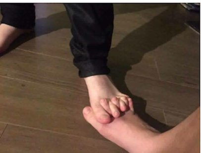

When I was a little girl, I daydreamed about falling in love and having a happily ever after. I spent hours conjuring my prince- what he looked like, what his name was, what he wore, what candy he’d bring me.
I longed for this. At age 6.
I guess we’re never too young to believe that the answer to the perfect life is out there waiting.
And we humans sure do love romantic love.
We love having someone to keep company with us, share experiences with us, be kind to us, understand us, support us, bring out the best in us.
We love having someone listen to us, hear us, look at us, see us. We love having someone care about us, have a feeling in their chests...
Y’know, about us.
I mean, we even love our pets because they love us.
Noticing a pattern here?
Oh no. Say it ain’t so, Mind Tickler.
Say it’s not that romantic love turns out to be yet another way just to think about our selves all the time.
Say it’s not that love is actually about getting others to be as all-about-me as we are.
I mean, when we think about the loves in our lives, does not every one of them come down to, “Do they think about me, do they feel the right things about me, are they nice to me? Am I getting what I need and want?”
And if we think about those situations where love somehow didn't have something to do with us, then we said, “No thanks. I'm outta there and on to someone better. For Me." And then hello break-up, divorce, cheating.
Maybe next time we’ll do things righter and find the right one- someone who will take us in better, and give us the validation we deserve.
Someone who will confirm Me.
Someone who will reify this self and put it center stage.
Damn.
Somehow we’ve contorted even love, that great connector of individuals into a greater whole, into a way to enhance and reinforce separate individuality instead.
Which, though convoluted, does make sense really.
Because we seemingly separate personalities do feel a powerful yearning to connect with something greater. We do strongly desire that full sense of union, of blending. We do long to get back to what we really are, to what isn’t separate, to what isn’t individual..
Yet at the same time...
What self-respecting individual really wants to invalidate the Me, lose the ego, “die to the self,” and blend into nothing?
Yeah, um, thanks and no.
Now I know reading this might not be fun. Or dreamy.
In fact, it’s the opposite of dreamy.
It’s awake-y.
And most often, these personalities don’t like that. We’d much rather sleep in a little longer, please.
Which is why love of any kind feels so darn good.
Because it might be the closest we can get to holding onto that story of Me and also feeling part of that whole, that bigger-than-us-something.
Love might be the best we can do to merge somehow and yet still hold onto these C’mon-I’m-Me stories of individual.
Certainly back when I was a kid, that connection so full, so all-encompassing, so filling, that I could die from the fullness and bliss-
That’s what I actually craved.
Not that I knew that then.
And of course 6-year olds are usually not consciously aware of the connection they already have, and already are.
So for all of us seemingly separate persons, thank goodness for love.
Because seeing through self, seeing the wispiness of these apparently personalities, is not for every one.
Love offers apparent individuals a way to come close...
Very close...
Very very close....
Without actually having to meet...
Or kill...
The Buddha.
Click here to get your every week.
Love Connection
